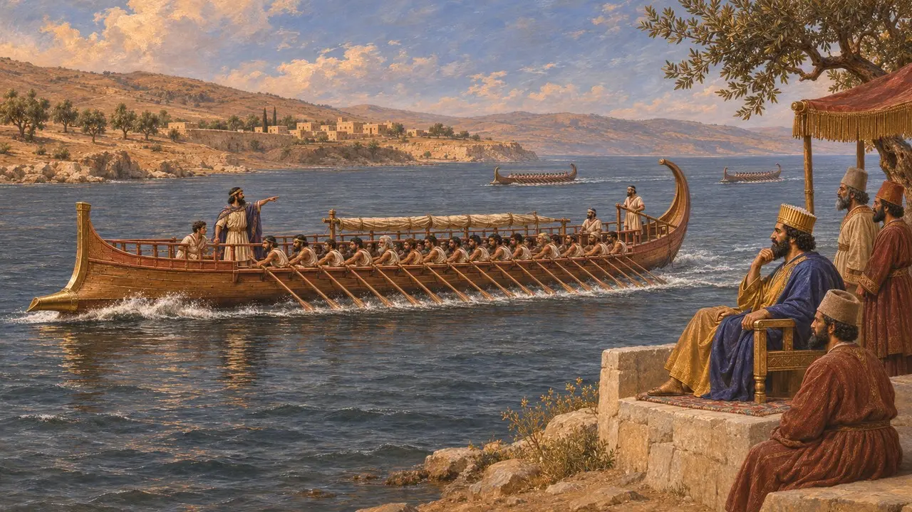
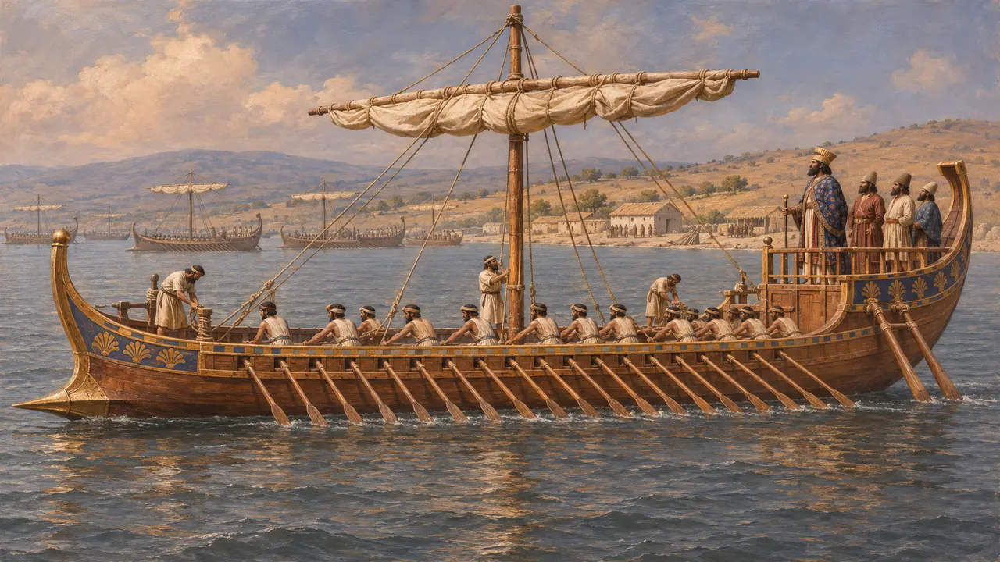
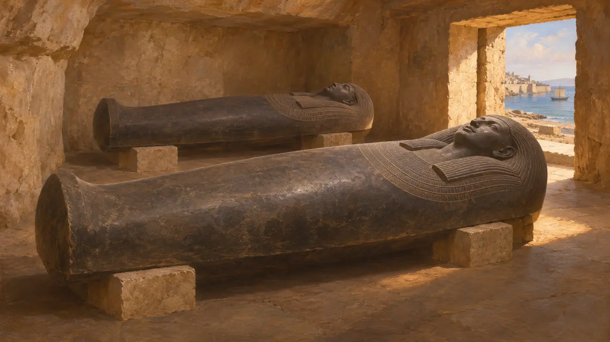
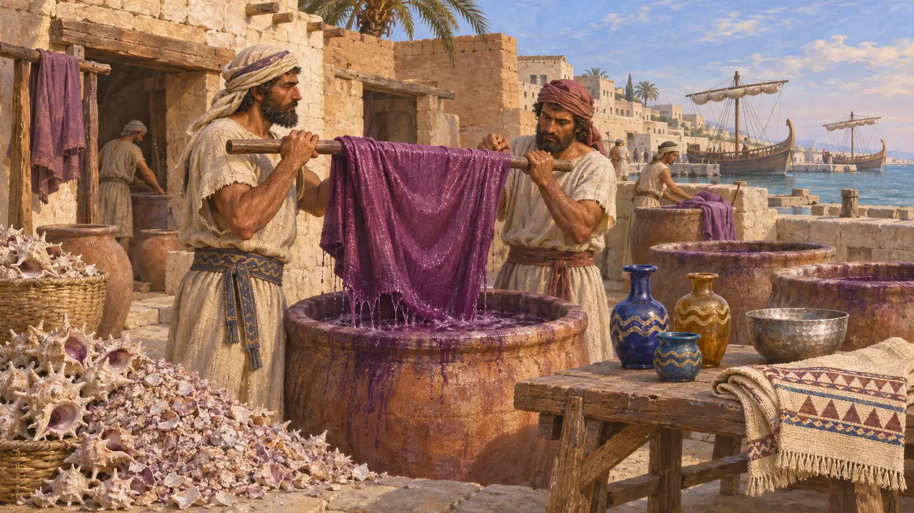

シドン
王の艦隊の先頭に立った艦船を擁するフェニキアの港湾都市、紀元前6~5世紀
レバノン沿岸にあったシドンは、テュロスやビュブロスと並ぶフェニキアの大都市の一つであった。ペルシアの支配下で、その王たちは王の艦隊で最も優れた艦船を指揮した。ヘロドトスによれば、クセルクセスがアビュドスで催した舟の競漕ではシドン人が勝利を収め、シドンの王は王の評議で最上席を占めたという。
ゲームでは： シドンの名は、メンフィスとサルディスの交易相手の隊商、フェニキア人の覚え書き、そして艦隊の章での水夫たちのおしゃべりに登場する。

艦隊の先陣
古代の記述アビュドスでクセルクセスは船の競走を観覧し、シドンのフェニキア人が勝利した。サラミスの戦いの前、指揮官たちは王の定めた順に着座し、最初にシドンの王、次にテュロスの王が座った。ヘロドトスは、シドンの指揮官としてアニュソスの子テトラムネストスの名を挙げている。
Herodotus 7.44, 7.96, 7.98, 8.67

シドンの船
古代の記述ヘロドトスによれば、クセルクセスはドリスコスで艦隊を閲兵したとき、シドン人の船に乗って進み、のちにペネイオス川の峡谷を見渡すためにもシドン人の船を選んだ。シドンの船は、ダレイオスの治世にギリシアの偵察へ送られたペルシア人たちとデモケデスをも運んだ。
Herodotus 3.136, 7.100, 7.128

歴代の王とその墓
同時代の記録ペルシア時代のシドン王たちの碑文入り石棺が現存しており、その中には紀元前6世紀後半から5世紀のタブニトと、その息子エシュムナザル2世のものがある。エシュムナザルの碑文によれば、諸王の主がドルとヤッファを彼に与えたという。おそらく海軍への奉仕に対してペルシア王が与えた下賜であろう。
Eshmunazar II sarcophagus inscription (Louvre)

紫と硝子
古代の記述シドンとテュロスは、ムレックス貝の紫染料や、精巧なガラス細工・金属細工で名高かった。ホメロスの詩では、シドンの職人が銀の鉢や刺繍を施した衣を作っている。砕いた貝殻の山が積み上がった染色工房の跡は、シドンで見つかっている。
Homer, Iliad 6.289-292, 23.743
出典
- Herodotus 3.136, 7.44, 7.96-100, 8.67
- Eshmunazar II sarcophagus inscription
- J. Elayi, Sidon, cité phénicienne aux périodes perse et hellénistique, 1989